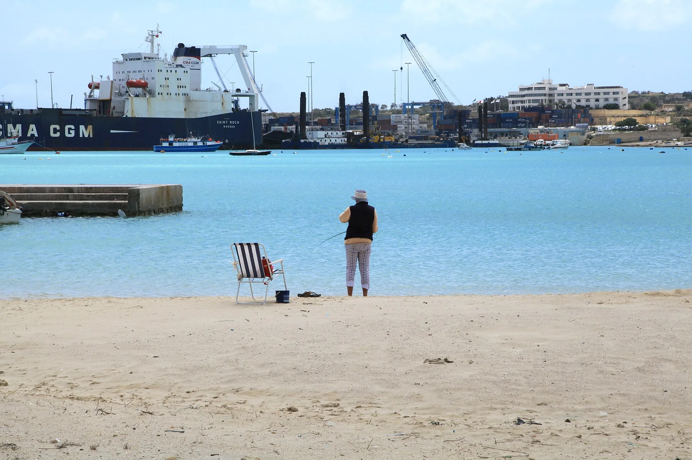

The sandy bay and public shore orient the centre. Check the exact entrance, aspect and current conditions before making a view, access, crowd, parking or swimming claim.
BIRŻEBBUĠA · READ THE SHORE
Bay life. Working harbour.
Birżebbuġa brings a sandy central waterfront, older coastal places and a working-port horizon into one locality. Begin with the exact street: Pretty Bay, Qajjenza and the inland valley edges are different property contexts.

ONE LOCALITY, SEVERAL EDGES
The bay is context, not the whole address.
The Local Council places Birżebbuġa on Malta's south-eastern coast between Kalafrana and Marsaxlokk, where four valleys meet. That explains the layered geography. It does not make every address beachfront, quiet, level or equally close to daily services.
St George's Bay and the Ferretti side form their own coastal context. A shared waterfront does not turn every Qajjenza or neighbouring address into central Pretty Bay.
Kalafrana, Bengħajsa and Freeport-facing streets require a current on-site check. This guide makes no locality-wide promise about noise, air, traffic or outlook.
Beach and port share the frame.
The licensed hero photograph visibly records both Pretty Bay and working-port infrastructure in 2014. It is useful orientation, not a current environmental reading or proof of the view from a particular home.
Commons image record ↗The valleys carry older layers.
Heritage Malta places Għar Dalam and Borġ in-Nadur in the wider Birżebbuġa setting. Current tickets, opening arrangements and access remain direct checks with the site operator.
Heritage Malta — Għar Dalam ↗VERIFIED EVERYDAY EXAMPLES
Useful anchors, without a ranking.
These operator- and register-backed examples establish shopping, food and activity context. They are not a complete census and are not described as closest or best. Check current hours, menus, services and access directly.
MyConvenience
The operator's current location directory includes its Birzebbuga 5 branch, identified as Ta' Nardu Fruit & Veg. Stock, services and hours remain a current store check.
Operator locations ↗Ferretti
The operator gives its address as Triq il-Qajjenza and describes a Mediterranean restaurant within historic walls. That is a location example, not a rating or price claim.
Ferretti operator site ↗Borġ in-Nadur
Heritage Malta describes the prehistoric complex on high ground between Wied Żembaq and Wied Dalam, facing the harbour entrance. Its page carried an until-further-notice closure notice when reviewed on 14 October 2026, so confirm current access directly.
Heritage Malta source ↗Licensed examples
The current MTA register lists Posh Turkish on Triq San Patrizju and Xirokk on Triq il-Qajjenza under Birżebbuġa. Menus and hours need operator confirmation.
MTA public register ↗Primary care spans a wider catchment.
Primary HealthCare currently places Birżebbuġa in the Paola Health Centre catchment, while its May 2026 charter lists a B'Bugia community clinic. Service type, referrals and opening arrangements can change, so confirm the appropriate point of care directly.
No blue water becomes a shortcut.
This edition draws no district boundary, harbour crossing, ferry line or generic route. Verified walking geometry, bus information, current car-traffic estimates and taxi-price observations remain separate sources and require exact endpoints, mode and observation time.
Load the Birżebbuġa overview only when you need it.
The map shows Birżebbuġa and nearby labels for orientation. It deliberately draws no locality border, property route, water crossing or journey time and loads from OpenStreetMap only after your click. Labels inside the viewport are not silently merged into one locality.
Birżebbuġa Local Council geography and history · Office of the Address Registrar · Primary HealthCare · Għar Dalam · Borġ in-Nadur · MyConvenience locations · Ferretti · MTA restaurant register · Wikimedia Commons image record

No ranking, fixed opening hours, property-specific route, environmental promise, beach-condition claim, guaranteed outlook, parking claim, accessibility promise or locality-wide journey time is claimed.